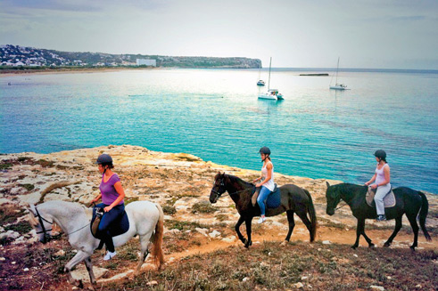

Camí de Cavalls, the best viewpoint
 Menorca deserves to be contemplated little by little and you have the possibility to do this. The Cami de Cavalls (Bridle path) is your opportunity. The rural road has its origins some say in the XIV century, and was also used in the XVIII century as a military road to communicate between the Martello towers dotted around the coast. Now in the XXI century it is a road that permits people to discover the island as it should be done, without rushing, just to enjoy nature.
Menorca deserves to be contemplated little by little and you have the possibility to do this. The Cami de Cavalls (Bridle path) is your opportunity. The rural road has its origins some say in the XIV century, and was also used in the XVIII century as a military road to communicate between the Martello towers dotted around the coast. Now in the XXI century it is a road that permits people to discover the island as it should be done, without rushing, just to enjoy nature.
 The Cami de Cavalls is 185 kilometres long and goes round the perimeter of the island. After years of disuse the Menorcans have recuperated the lane and it is possible to go right round on foot, on bicycle or on horseback. We repeat, take your time.
The Cami de Cavalls is 185 kilometres long and goes round the perimeter of the island. After years of disuse the Menorcans have recuperated the lane and it is possible to go right round on foot, on bicycle or on horseback. We repeat, take your time.
The road like the island offers varied aspects and it has been divided into 20 stretches. Some are apt for everyone, easy comfortable walks. Some are more difficult. We suggest that before taking any route you study the information and choose well. The offer is diverse some sections are just over 5 kilometres and others more than 13. Some are on the flat and others have steep gradients. There is a lot to choose from.
The Cami de Cavalls technically known as GR 233 (the classification given to routes of note throughout Europe) has wooden signposts on all the sections, these have a symbol of a horseshoe on the top. Without doubt from the road you can see some of the best views on the island. Walking along you can discover beaches, archaeological sites, vegetation; La Albufera des Grau, defence towers, the rocky coast, the sea... Are you going to miss it?